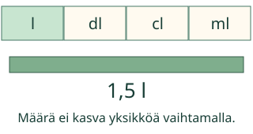
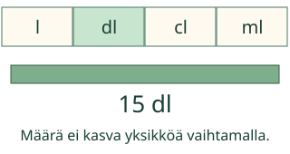
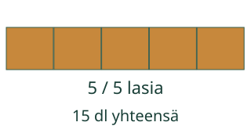
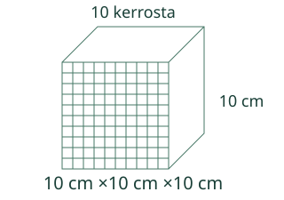

<link rel="stylesheet" href="lesson.css"><section data-b13-unit>
<section data-teaching-step="1" data-lesson-role="teaching-step">
<div class="intro"><p>Aava täyttää laseja. Sama mehu voidaan mitata litroina tai desilitroina.</p></div>
</section>

<section data-teaching-step="2" data-lesson-role="teaching-step">
<section data-explore><button disabled type="button" data-action="step">Näytä seuraava vaihe</button><div data-model></div><p data-caption>1,5 l = 1,5 l. Sama tilavuus säilyy.</p><details data-tools data-lesson-role="teaching-step"><summary>Vaihda mallia tai toista</summary><label>Malli<select disabled data-model-case><option value="forward">1,5 l → dl</option><option value="back">15 dl → l</option><option value="small">2,5 l → ml</option><option value="cubic">1 dm³ → cm³</option><option value="groups">1,5 l → dl ja annoksiin</option></select></label><button disabled type="button" data-action="play">Toista vaiheet</button> <button disabled type="button" data-action="stop">Pysäytä</button> <button disabled type="button" data-action="model-reset">Mallin alkuun</button><p>Yksi vaihe nimeää saman määrän uudelleen tai siirtää yhden annoksen. Voit vastata suoraan ilman mallin läpikäyntiä.</p></details></section>
</section>
<nav data-lesson-role="metadata"><a href="#explain">Näin muunnat</a> · <a href="#practice">Kokeile itse</a> · <a href="#teacher">Paperille</a></nav>
<section id="explain" data-lesson-role="worked-example"><section data-teaching-step="3-1" data-lesson-role="worked-example"><h2>Näin muunnat</h2><h2>Sama mehu kahdella asteikolla</h2><p>1,5 l = 15 dl. Litra on 10 desilitraa, joten yksi ja puoli litraa on 10 dl + 5 dl. Pienempiä mittayksiköitä tarvitaan enemmän. Mehua ei lisätty.</p><figure data-lesson-role="worked-example"><figcaption>Ratkaistu esimerkki. Yksiköt näkyvät aina lukuarvon mukana.</figcaption></figure></section>
<section data-teaching-step="3-2" data-lesson-role="worked-example"><h3>Litrat ja millilitrat</h3><p>2,5 l = 2 500 ml. Reitti l → dl → cl → ml sisältää kolme kymmenaskelta. Takaisin: 1 500 ml : 1 000 = 1,5 l.</p><figure data-lesson-role="worked-example"><figcaption>Suurempia mittayksiköitä tarvitaan vähemmän.</figcaption></figure></section>
<section data-teaching-step="3-3" data-lesson-role="worked-example"><h3>Yhden välin ansa</h3><p>1 dl = 100 ml, ei 10 ml: välissä on senttilitra. Litrayksiköiden etuliitteet ja kuutiopituuksien muunnokset ovat eri asia. 1 dm³ = 1 l = 1 000 cm³ = 1 000 ml.</p><p>Ennusta ennen seuraavaa vaihetta: kasvaako vai pieneneekö lukuarvo? Mikä määrä pysyy samana?</p></section>
<section data-teaching-step="3-4" data-lesson-role="worked-example"><h3>Kannu ja lasit</h3><p>1,5 l = 15 dl. Yhteen lasiin tulee 3 dl: 15 : 3 = 5 täyttä lasia. Malli näyttää saman tilavuuden jakautumisen laseihin. Nesteen virtausta, roiskeita tai mittausvirhettä ei simuloida.</p><figure data-lesson-role="worked-example"><figcaption>Muunna samaan yksikköön ennen annosten laskemista.</figcaption></figure></section>
<section data-teaching-step="3-5" data-lesson-role="worked-example"><h3>Kuutiot ovat kolmiulotteisia</h3><figure data-lesson-role="worked-example"><figcaption>1 dm³: 10 × 10 × 10 = 1 000 cm³. 1 cm³ = 1 ml.</figcaption></figure><p>Yhden pituusyksikön ×10 muuttuu kuutiotilavuudessa ×10 ×10 ×10 = ×1 000. Pinta-ala ei ole tilavuus. Kuva on kaavio; ruutujen tunnistaminen ei osoita koko tilavuuden käytännön mittaamistaitoa.</p></section></section>

<section data-teaching-step="4" data-lesson-role="teaching-step">
<details data-lesson-role="teaching-step"><summary>Kokeile omaa muunnosta</summary><p>Kirjoita määrä ja valitse saman suureen yksiköt. Tämä näyttää laskun arvon, ei anna osaamisarviota.</p><label>Määrä<input disabled type="text" inputmode="text" data-value value="1" maxlength="128"></label><label>Mistä yksiköstä<select disabled data-from><option value="m³">m³</option><option value="dm³">dm³</option><option value="l">l</option><option value="dl">dl</option><option value="cl">cl</option><option value="ml">ml</option><option value="cm³">cm³</option></select></label><label>Mihin yksikköön<select disabled data-to><option value="m³">m³</option><option value="dm³">dm³</option><option value="l">l</option><option value="dl">dl</option><option value="cl">cl</option><option value="ml">ml</option><option value="cm³">cm³</option></select></label><button disabled type="button" data-action="convert">Näytä sama määrä</button><p data-converted>Valitse määrä ja yksiköt.</p></details><h2 id="practice">Kokeile itse</h2><p>Yksikkö on tehtävässä. Kirjoita kenttään vain lukuarvo. Myös samanarvoinen murtoluku käy.</p><label>Tehtävä<select disabled data-task><option value="forward">1,5 l = □ dl</option><option value="small">2,5 l = □ ml</option><option value="hundred">4 dl = □ ml</option><option value="back">15 dl = □ l</option><option value="centi">2 l = □ cl</option><option value="cubic">1 dm³ = 1 l</option><option value="transfer">1,5 l mehua kaadetaan 3 dl:n laseihin ilman hävikkiä</option><option value="zero">0 l = □ ml</option><option value="match">Täydennä samat tilavuudet: 1 dl = □ ml; 1 l = □ ml; </option><option value="sense">Pullossa mitattiin 500 ml mehua</option></select></label><p data-question>1,5 l = □ dl. Sama mehumäärä.</p><div data-single><label>Lukuarvo<input disabled data-answer type="text" inputmode="text" maxlength="128" placeholder="esim. 1,5 tai 3/2"></label></div><div data-many hidden><label>1. lukuarvo<input disabled data-answer type="text" inputmode="text" maxlength="128"></label><label>2. lukuarvo<input disabled data-answer type="text" inputmode="text" maxlength="128"></label><label>3. lukuarvo<input disabled data-answer type="text" inputmode="text" maxlength="128"></label></div><div data-choicebox hidden><label>Vertaile<select disabled data-answer><option value="">Valitse</option><option value="sama">Sama määrä</option><option value="eri">Eri määrä</option></select></label></div><button disabled type="button" data-action="check">Tarkista</button><p data-feedback aria-live="polite" data-result="neutral">Tarkista, kun olet valmis.</p><details data-lesson-role="hint"><summary>Tarvitsen vihjeen</summary><p>Kirjoita ensin, montako pienempää yksikköä on yhdessä suuremmassa. Pienempään muunnettaessa kerro, suurempaan muunnettaessa jaa. Tarkista yksiköt uudelleen. Käytä annostehtävässä samaa yksikköä sekä kokonaismäärälle että yhdelle annokselle.</p></details>
</section>
<details id="teacher" data-lesson-role="teacher-note"><summary>Opettajalle, paperille ja lopuksi</summary><p>Mittaa vettä oikealla mitta-astialla. Vertaa 1 l ja kymmenen 1 dl:n annosta. Astian vetomitta tarkoittaa, paljonko se voi sisältää; nesteen tilavuus voi olla tätä pienempi.</p><p>Poistumiskysymys: Muuta 750 ml litroiksi ja perustele. Hyväksy 0,75 l sekä 3/4 l. Kysy myös, miksi astian ulkomuoto ei muuta muunnosta.</p><p>Harjoittelu näyttää nykyisen tuetun vastauksen tarkistuksen. Se ei todista itsenäistä mittaamista, viivästettyä muistamista tai muodollista hallintaa. Vihje ja malli ovat vapaaehtoisia. Henkilöhistoriaa ei tallenneta.</p><p>Muunnin tukee vain tässä nimettyjä saman suureen yksiköitä ja ei-negatiivisia määriä 0…1 000 000. Vastauksissa tuetaan tavallisia kokonais- ja desimaalilukuja sekä murtolukuja (enintään 128 merkkiä; normalisoituna 18 kokonais- ja 9 desimaalimerkkiä). Ei eksponentti- tai laskulausekesyntaksia, negatiivisia määriä eikä pyöristämistä. Etu- ja loppunollat eivät muuta arvoa.</p><p>Toiston 650 ms on esitysväli, ei fyysistä aikaa. Pituus, massa ja tilavuus eivät muunnu toisikseen ilman muuta tietoa. Aikamuunnos 1 h = 60 min ei kuulu näihin kymmenkertoimiin.</p></details><noscript data-lesson-role="metadata"><p>Ilman JavaScriptiä alkukuva, esimerkit ja selitykset säilyvät. Muunna ja vastaa paperille. Vuorovaikutus ja tarkistuspalaute tarvitsevat JavaScriptin.</p></noscript></section>
